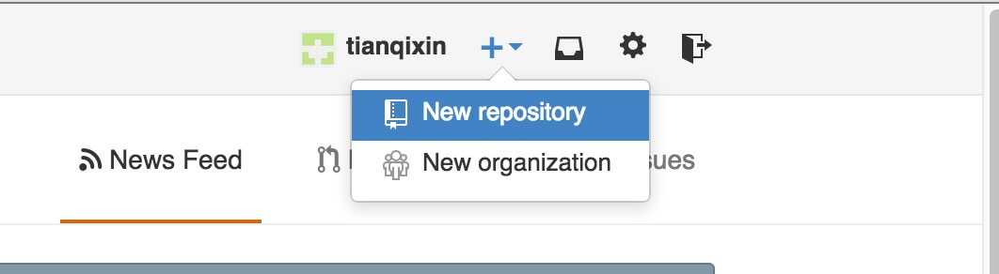

Git 远程仓库(Github)
Git 并不像 SVN 那样有个中心服务器。 目前我们使用到的 Git 命令都是在本地执行，如果你想通过 Git 分享你的代码或者与其他开发人员合作。 你就需要将数据放到一台其他开发人员能够连接的服务器上。 本例使用了 Github 作为远程仓库，你可以先阅读我们的 Github 简明教程。
添加远程库
要添加一个新的远程仓库，可以指定一个简单的名字(给url取别名)，以便将来引用,命令格式如下：
git remote add [shortname] [url]
本例以Github为例作为远程仓库，如果你没有Github可以在官网https://github.com/注册。 由于你的本地Git仓库和GitHub仓库之间的传输是通过SSH加密的，所以我们需要配置验证信息： 使用以下命令生成SSH Key：
$ ssh-keygen -t rsa -C "youremail@example.com"
后面的 your_email@youremail.com 改为你在 github 上注册的邮箱，之后会要求确认路径和输入密码，我们这使用默认的一路回车就行。成功的话会在~/下生成.ssh文件夹，进去，打开 id_rsa.pub，复制里面的 key。
回到 github 上，进入 Account => Settings（账户配置）。

左边选择 SSH and GPG keys，然后点击 New SSH key 按钮,title 设置标题，可以随便填，粘贴在你电脑上生成的 key。
 添加成功后界面如下所示
添加成功后界面如下所示
为了验证是否成功，输入以下命令：
$ ssh -T git@github.com Hi tianqixin! You've successfully authenticated, but GitHub does not provide shell access.
以下命令说明我们已成功连上 Github。
之后登录后点击" New repository " 如下图所示：

之后在在Repository name 填入 runoob-git-test(远程仓库名) ，其他保持默认设置，点击"Create repository"按钮，就成功地创建了一个新的Git仓库：
 创建成功后，显示如下信息：
创建成功后，显示如下信息：
 以上信息告诉我们可以从这个仓库克隆出新的仓库，也可以把本地仓库的内容推送到GitHub仓库。
现在，我们根据 GitHub 的提示，在本地的仓库下运行命令：
以上信息告诉我们可以从这个仓库克隆出新的仓库，也可以把本地仓库的内容推送到GitHub仓库。
现在，我们根据 GitHub 的提示，在本地的仓库下运行命令：
$ mkdir runoob-git-test # 创建测试目录
$ cd runoob-git-test/ # 进入测试目录
$ echo "# 菜鸟教程 Git 测试" >> README.md # 创建 README.md 文件并写入内容
$ ls # 查看目录下的文件
README
$ git init # 初始化
$ git add README.md # 添加文件
$ git commit -m "添加 README.md 文件" # 提交并备注信息
[master (root-commit) 0205aab] 添加 README.md 文件
1 file changed, 1 insertion(+) create mode 100644 README.md
提交到 Github
$ git remote add origin git@github.com:tianqixin/runoob-git-test.git
$ git push -u origin master
以下命令请根据你在Github成功创建新仓库的地方复制，而不是根据我提供的命令，因为我们的Github用户名不一样，仓库名也不一样。
接下来我们返回 Github 创建的仓库，就可以看到文件已上传到 Github上：

查看当前的远程库
要查看当前配置有哪些远程仓库，可以用命令：
git remote
实例
$ git remote
origin
$ git remote -v
origin git@github.com:tianqixin/runoob-git-test.git (fetch)
origin git@github.com:tianqixin/runoob-git-test.git (push)
执行时加上 -v 参数，你还可以看到每个别名的实际链接地址。
提取远程仓库
Git 有两个命令用来提取远程仓库的更新。 1、从远程仓库下载新分支与数据：
git fetch
该命令执行完后需要执行git merge 远程分支到你所在的分支。 2、从远端仓库提取数据并尝试合并到当前分支：
git pull
该命令就是在执行 git fetch 之后紧接着执行 git merge 远程分支到你所在的任意分支。
假设你配置好了一个远程仓库，并且你想要提取更新的数据，你可以首先执行 git fetch [alias] 告诉 Git 去获取它有你没有的数据，然后你可以执行 git merge [alias]/[branch] 以将服务器上的任何更新（假设有人这时候推送到服务器了）合并到你的当前分支。
接下来我们在 Github 上点击" README.md" 并在线修改它:
 然后我们在本地更新修改。
然后我们在本地更新修改。
$ git fetch origin
remote: Counting objects: 3, done.
remote: Compressing objects: 100% (2/2), done.
remote: Total 3 (delta 0), reused 0 (delta 0), pack-reused 0
Unpacking objects: 100% (3/3), done.
From github.com:tianqixin/runoob-git-test
0205aab..febd8ed master -> origin/master
以上信息"0205aab..febd8ed master -> origin/master" 说明 master 分支已被更新，我们可以使用以下命令将更新同步到本地：
$ git merge origin/master
Updating 0205aab..febd8ed
Fast-forward
README.md | 1 +
1 file changed, 1 insertion(+)
查看 README.md 文件内容：
$ cat README.md
菜鸟教程 Git 测试
第一次修改内容
推送到远程仓库
推送你的新分支与数据到某个远端仓库命令:
git push [-u] [alias] [branch]
以上命令将你的 [branch] 分支推送成为 [alias] 远程仓库上的 [branch] 分支，一般会使用-u 实例如下。
$ touch runoob-test.txt # 添加文件
$ git add runoob-test.txt
$ git commit -m "添加到远程"
master 69e702d] 添加到远程
1 file changed, 0 insertions(+), 0 deletions(-)
create mode 100644 runoob-test.txt$ git push -u origin master # 推送到 Github
重新回到我们的 Github 仓库，可以看到文件以及提交上来了：
删除远程仓库
删除远程仓库你可以使用命令：
git remote rm [别名]
实例
$ git remote -v
origin git@github.com:tianqixin/runoob-git-test.git (fetch)
origin git@github.com:tianqixin/runoob-git-test.git (push)
添加仓库 origin2
$ git remote add origin2 git@github.com:tianqixin/runoob-git-test.git
$ git remote -v
origin git@github.com:tianqixin/runoob-git-test.git (fetch)
origin git@github.com:tianqixin/runoob-git-test.git (push)
origin2 git@github.com:tianqixin/runoob-git-test.git (fetch)
origin2 git@github.com:tianqixin/runoob-git-test.git (push)
删除仓库 origin2
$ git remote rm origin2
$ git remote -v
origin git@github.com:tianqixin/runoob-git-test.git (fetch)
origin git@github.com:tianqixin/runoob-git-test.git (push)